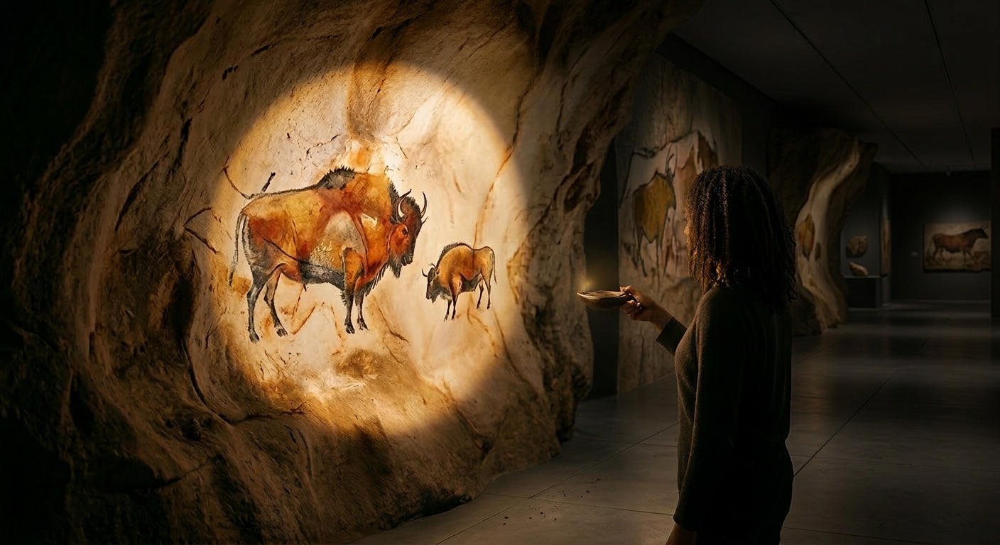
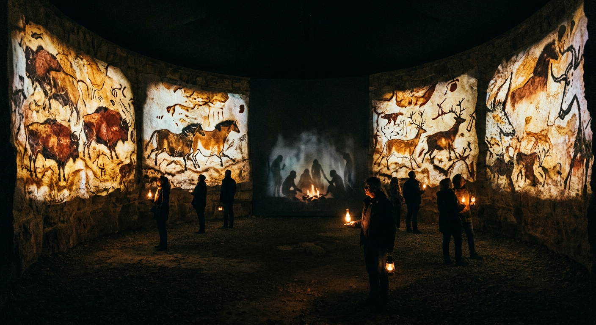
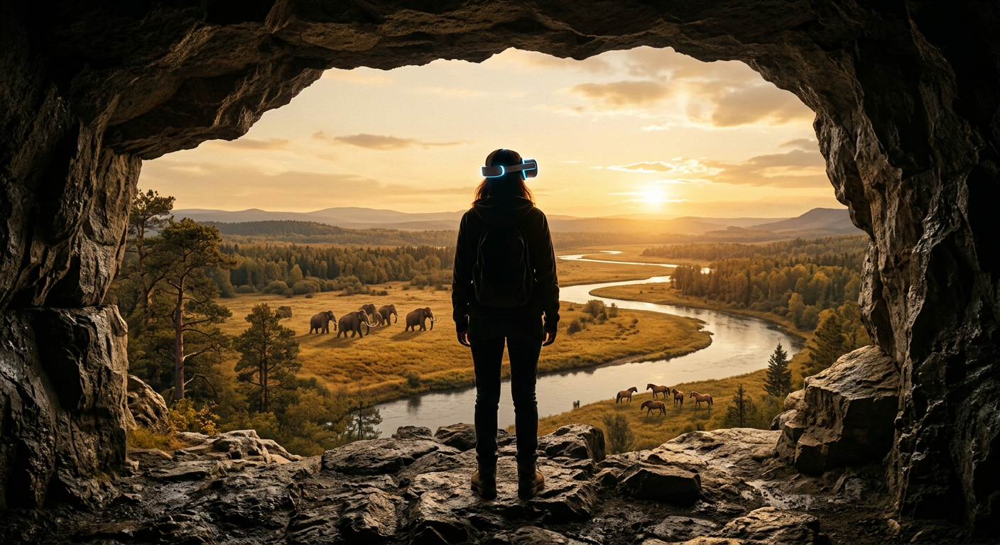

项目简报 · 2026年3月
Cave Theatre — An Immersive Experience
项目概况
洞穴剧场是一个以法国史前洞穴壁画为主题的沉浸式体验装置，面向商业空间、博物馆和文旅场馆。
整个体验占地约 150–200 平方米，由三个空间依次构成，完整体验时长 25–35 分钟，每场最多同时容纳 15–20 人。观众进场时取一盏手持"油灯"道具，油灯贯穿全程。
项目的核心是一套定制的空间感知与投影系统：系统实时追踪每个油灯在空间中的位置，驱动投影光照和内容响应。硬件和软件架构一次建成，内容可以按项目替换，支持跨场馆复用。
为什么是洞穴壁画
肖维洞穴（Chauvet）的壁画距今约 36,000 年，拉斯科（Lascaux）约 17,000 年——两者之间相隔近 20,000 年，大约是我们与三星堆之间时间距离的五倍。但在这漫长的时间跨度里，史前人类持续在洞穴深处作画，直到大约一万年前，这个行为忽然停止了。没有人知道为什么。也没有人知道这些画的意义是什么。它们是仪式，是记录，是某种我们已经完全遗忘的语言？这些故事延续了三万年，然后成为了永恒的谜团。
法国西南部的史前洞穴是目前已知最重要的史前艺术遗址群，联合国教科文组织将其中多处列为世界遗产。然而，这些洞穴已陆续因保护原因对公众关闭——拉斯科洞穴自 1963 年起禁止进入，肖维洞穴自 1994 年发现起即封闭至今。目前世界各地观众能看到的，几乎都是专业机构制作的复制品。
法国政府为拉斯科复制展馆（Lascaux IV）投入超过 5,700 万欧元——复制品本身已经是这些遗产面向公众的正式形式。而今天的技术手段，让复制品可以做得远不止于此：它可以是互动的，可以响应观众的行为，可以在任何城市落地。地理和空间的限制不再是障碍，这些遗产的体验方式第一次有了真正的可能性。
体验内容

长廊一侧安装 3–4 段洞穴壁面复制品，对应真实遗址：拉斯科公牛大厅、肖维洞穴、鲁菲尼亚克猛犸象群。复制品采用玻璃纤维加矿物涂层制作，还原真实岩石的表面起伏。
进入时，展厅处于近乎全暗的状态。观众从取灯台拿起油灯，灯在手中亮起。
油灯照到哪里，哪里才亮起来。其余区域保持黑暗。这和史前画家进洞时的处境完全一样——手里只有一盏灯，能看见的范围就是那一圈光。
入口处的气味是石灰岩和矿物的气息，带着洞穴特有的冷意。这由入口区的气味扩散装置控制，与室外空气完全隔离。声音系统在整个长廊维持一层低沉的环境底声——岩壁的混响、远处极微弱的滴水声、偶尔的气流——不构成具体的声音事件，只是让空间的质感对了。脚步声在这里听起来和普通展厅不同，观众会本能地放轻动作。这三层感官——气味、黑暗、声音——共同建立起真实的感觉空间。
油灯位置由 UWB 传感器实时追踪，投影系统根据坐标在复制品表面生成对应的光照。由于复制品有真实的物理起伏，光从不同角度打来会产生不同的浮雕阴影，岩石感是真实的，不是平面模拟出来的。
真实洞穴中有一类体验很难在静态展示中还原：许多壁画里混有刻画的痕迹，这些线条在正面光下几乎看不见，只有当光从侧面低角度扫过时才会浮现出来。这是史前画家有意为之的——图像随光的角度变化而显现，不是一成不变的画面。我们在复制品表面叠加了一层实时投影光照，油灯角度的改变直接影响壁面上光影的方向。观众移动手中的灯，会看到岩面上的某些细节从黑暗中逐渐显出来。这个体验只有在真实洞穴里持灯行走才能得到，我们把它带进了展厅。
油灯在某段壁画前停留 8 秒以上，会触发来自壁画方向的空间音频——不是广播，是贴耳的低语，讲述这段壁画的一个具体细节。声音从壁画位置传来，像是画本身在说话。
油灯非常靠近某只动物时，动物轮廓短暂发光，线条像是被重新描出来——停留几秒，然后消退。拉斯科的马有六条腿，原牛有八条腿，这是画家用多条腿来表达运动的方式。当轮廓亮起，这个意图才变得清晰。
三个以上油灯同时照向同一段壁画，画上的动物产生轻微位移，像是多条腿短暂同时迈动。这个效果只有多人同时参与才能看到，单独一人不会触发。
场景一末端，当有观众走到出口区域并停留片刻，地面脚印投影出现——一组人的脚印和动物爪印，从长廊末端延伸向场景二入口，引导观众跟随。

圆形空间的墙面是一整圈连续的投影面。四个方向分别对应四个季节，同时运行：
母马带着小马驹从画面深处走来，鹿群向右迁移
野牛群密集聚集，雄牛体型巨大，底部有三文鱼洄游的鱼群
两头雄鹿面对面，鹿角完全展开，正在对峙
动物稀疏，大量手印叠在岩石上，几何符号散布其间
四个季节同时存在于这个圆形空间里，观众走向哪个方向，就进入哪个季节的画面。
墙上的动物像是悬浮在岩面上，油灯靠近时，它们会投下随光源移动的阴影——这个阴影是实时计算的，跟着观众手中的灯走。每种动物对光的反应不同：小马驹会好奇地停下，转头看向光源；野牛群里最近的一头先警觉，这个状态会向后传导；雄鹿会在持灯静立的观众面前缓缓走近。冬季区另有一处互动——手印在油灯靠近时微微发光；观众可以贴近岩面，摄像头捕捉手形，将自己的手印叠在古老的手印旁，约 60 秒后缓慢消退。
圆形空间中央有一组半透明投影，展示几个史前人类的形象。他们围着一小堆火坐着，低头看火、用手指在地上划画、站着听远处的声音。他们不看观众，不响应任何操作，只是在自己的时间里存在。观众绕着他们走，用油灯照亮他们。
当场景二内有三个以上油灯同时照亮不同方向的壁画，中央的一个人会站起来，开始描述一件事——手势夸张，其他人聚过来倾听。墙上随之出现奔跑的动物轮廓，像是他正在用手势重演一场狩猎。大约 60 秒后，他坐下，一切回到安静。

出口区设有 6 台悬挂的 VR 观测镜，围成半圆排列，形成一个小型观景台。外形包裹成暗色金属的仪器形态。每批 6 名观众同时使用，各自把眼睛凑上去，像用望远镜一样观看，约 40 秒。整批同进同出，不产生等待。
镜中是一段 360° 双目立体视频：视角站在洞穴出口，面前是开阔的史前地貌——宽阔的河谷，琥珀色的草原，中景有一群野马缓慢移动，远处有猛犸象群带着幼崽穿越草原。回头看，洞穴内还有微弱的火光。
没有叙事，没有解说。只是那片世界在那里，安静地存在。
这里的气味换了——不再是石灰岩，而是湿草和冷空气。出口处设有归还台。观众将油灯放回，灯熄灭。
收入模型
项目采用连续流模式运营，不设固定场次。每批 6 人，每 5 分钟放入一批，全场总人数上限 18 人（三个场景各约 6 人）。体验时长约 30 分钟，出一批进一批，稳态吞吐约 36 人/小时。
| 指标 | 数值 |
|---|---|
| 票价 | ¥120–180 / 人 |
| 每批人数 | 6 人 |
| 全场上限 | 18 人（3 批错开） |
| 稳态吞吐 | 36 人/小时 |
| 日运营时长 | 12 小时（10:00–22:00） |
| 年运营天数 | 280 天 |
| 日接待（70% 利用率） | 约 300 人 |
| 年接待量 | 约 84,000 人 |
| 年票房收入（均价 ¥150） | 约 ¥1,260 万 |
| 商业计划保守估算 | ¥800–1,000 万/年 |
| 年运营成本 | 待定，依合作结构协商 |
| 年净收益 | 依运营成本结构确定后测算 |
票务收入能持续的前提是观众持续到来。有几个机制支撑这一点：
内容更新周期。系统架构支持内容模块更换。壁画遗址段可以按季度更换，圆形剧场的季节内容可以做节日特别版本。同一个城市的观众，每隔半年有理由再来一次。
散客 + 团体预约
企业团建、品牌活动、学校研学
向其他场馆输出系统使用权
文化产业扶持、夜经济、研学项目
与遗址相关的文化品牌联合推广
场地租借在淡季尤其有价值——企业团建和学校研学对时间不敏感，可以有效填补非节假日的空档。
与商业地产的结合
商业地产中有一类空间持续难以出租：地下层、长廊端头、大体量购物中心的角落位置。这些空间的共同特点——封闭、昏暗、远离主动线——正是沉浸式体验所需要的条件。
洞穴剧场只需要约 150–200 平方米，可以在不影响原有商业格局的情况下嵌入这类位置。一套硬件的安装成本约 ¥10 万–15 万，从票务回收周期看，约 2–3 个月可覆盖硬件投入，此后产生持续净收入。
从业主角度，这是把一个无收益或低收益的面积，转变为日均稳定产出的区域，同时为整个物业带来客流。
新商业项目开业、楼盘销售中心启动、文旅项目招商期——这些节点都需要在短时间内制造到访量和话题。洞穴剧场的视觉场景（黑暗空间、火把光照、动物壁画）具备较高的社交媒体传播属性，适合作为限时体验制造首期热度。装置可在 2–3 周内完成部署，项目结束后拆卸移至下一个场地。
带有稳定文化配套的商业综合体，租金和销售溢价在多个市场的案例中约为 15–25%。这个效应对高端住宅和定位中高端的商业项目尤为明显。一个持续运营的沉浸式文化空间，可以作为整个项目文化定位的锚点。
投资人提供空置场地，我方安装运营，票房按比例分成
投资人出资硬件与内容，我方负责技术与运营，利润分成
投资人购买整套装置交付，我方交付并提供维护，项目款 + 年维护费
可复制性
系统分为两个层级：基础设施（硬件、定位、渲染框架）和内容（壁画、动物、场景设计）。
基础设施在项目间 100% 复用，只有内容每次重新制作。内容成本约占单次部署总成本的 25–35%。
从第二个项目开始，硬件不需要重复采购，团队的施工和校准经验也会显著缩短部署周期。随着项目积累，边际成本持续下降，同样的收入规模对应的利润率会逐步提升。
核心道具系统（油灯 + UWB 定位 + 投影联动）不依赖洞穴题材，可以移植到其他叙事场景中。举例：皮影戏体验中，观众手持光源，决定哪个皮影被照亮、从哪个角度投影；或者用于夜间园林导览，手中的灯决定植物、建筑、水面的响应方式。机制不变，内容和形式随场景重新设计。
学术合作与中法文化交流
拉斯科、肖维、鲁菲尼亚克等遗址是法国文化部管理的国家遗产，同时也是学术界持续研究的对象。波尔多大学、法国国家科学研究中心（CNRS）等机构在史前艺术领域有长期积累。
我们计划联系法国大学系统，邀请相关学者以顾问或合作方身份参与项目。学术合作的实际价值在于：内容的准确性有专业机构背书，在向法国文化机构申请资质或授权时，学术关系是可信的入场凭证；同时，法国高校和研究机构的网络有助于项目在欧洲文化圈的传播。
在内容层面，这个项目有一个自然的中法文化交汇点：以法国的史前遗产为核心，由中国团队以数字技术重新呈现，在中国城市运营。这个结构本身可以作为中法文化交流的具体案例，有利于在两国的文化机构和官方渠道中建立对话。
长期方向上，在中国市场完成原型验证后，我们希望将这套系统和内容带到法国本地场馆落地，形成双向流通：中国观众看法国史前世界，法国观众看中国团队对这段历史的当代解读。
时机判断
AI 正在降低数字内容的生产成本。动画、音效、场景设计——这些过去需要大量人力的工作，现在可以借助 AI 工具在更短时间内完成，制作成本比三年前低了一半以上。
对我们来说，这是有利的：内容制作门槛降低，意味着每次部署的成本在下降，商业模型更容易成立。
同时，AI 的普及正在让屏幕上的内容越来越丰富、越来越廉价。观众在家可以获得大量高质量的视觉内容，反而让"必须到现场"的体验变得更稀少、更有价值。洞穴剧场的体验依赖真实的物理空间、真实的物理道具和真实的身体在场——这些不是数字内容可以替代的。
现在是进入这个方向比较合适的时间节点：AI 工具成熟到可以帮助我们降低制作成本，但这类物理体验还没有大量竞争者。
团队
负责数字内容、互动系统和整体体验设计，有多个沉浸式装置的落地经验。
里尔大学（Université de Lille）认知与心理方向博士后，负责与法国高校和研究机构的对接。
投资需求
目标是完成一个可向合作机构展示的运行原型，验证核心技术和体验逻辑。
| 用途 | 金额 |
|---|---|
| 硬件采购（UWB、投影、道具） | ¥8 万 |
| 内容制作（壁画动画、音效、VR 视频） | ¥12 万 |
| 场地与安装 | ¥5 万 |
| 备用与调试 | ¥5 万 |
| 合计 | ¥30 万 |
产出：可运行的完整体验原型 + 演示视频 + 首批合作机构接触。
依据原型验证结果和第一个合作场馆确定，预计追加投入 ¥40 万–80 万（含复制品制作和场地装修配合），正式对外售票运营。
玻璃纤维壁面复制品的造价区间较宽，取决于精度和制作方。原型阶段可先用简化方案控制成本，正式项目前确认供应商和报价。
票务收入估算基于稳定场次利用率。实际运营初期可能有一个爬坡期，前两个月收入低于稳定状态。建议原型验证阶段同步测试定价和预约转化率。
与博物馆或商业体的合作谈判通常需要 2–4 个月。商业空间合作相对更快，可以作为首个落地项目的优先方向。
附录
外形参考旧石器时代脂肪灯造型，树脂 3D 打印外壳，内置：
复制品表面有真实的物理起伏。系统为每段复制品建立对应的 3D 模型，在 Unity 中以虚拟投影仪摄像机渲染，输出图像打到物理表面上时，几何吻合。油灯位置作为虚拟点光源，实时计算对岩石表面的光照方向，凸起受光、凹陷产生阴影，效果随油灯角度变化。
| 类别 | 项目 | 小计 |
|---|---|---|
| UWB 定位 | 锚点 ×4 + 标签 ×4 | ¥14,000 |
| 油灯道具 | 外壳 + 充电 + LED + 组装 ×4 | ¥5,000 |
| 投影安装 | 安装架 + 线缆 | ¥4,000 |
| 手印识别 | 红外摄像头 + 支架 | ¥6,000 |
| 灯光控制 | Enttec DMX 控制器 | ¥5,000 |
| 气味系统 | 扩散机 + 气味配方 | ¥4,000 |
| 耗材备件 | — | ¥3,000 |
| 硬件小计 | ¥41,000 | |
| Resolume Arena | 投影软件 | ¥6,500 |
| QLab | 原型阶段免费版 | ¥0 |
| 原型合计 | 约 ¥48,000 |
| 类别 | 小计 |
|---|---|
| UWB 定位系统（锚点 ×8 + 标签 ×12） | ¥28,000 |
| 油灯道具 ×12 | ¥15,000 |
| 洞穴复制品制作（CNC 泡沫 + 硬涂层，约 20㎡） | ¥12,000–20,000 |
| 圆形剧场薄纱屏 + 安装 | ¥5,000–12,000 |
| 投影安装架 + 线缆 | ¥8,000 |
| VR 观测镜（Quest 3 ×6 + 外壳 + 悬挂） | ¥30,000 |
| 手印识别摄像头 | ¥6,000 |
| 气味系统（入口 + 出口） | ¥8,000 |
| DMX 灯光控制 | ¥5,000 |
| 耗材备件 | ¥5,000 |
| 硬件合计 | 约 ¥100,000–115,000 |
| Resolume Arena | ¥6,500 |
| QLab Video + Audio | ¥5,500 / 年 |
| 完整版合计（首年） | 约 ¥112,000–127,000 |